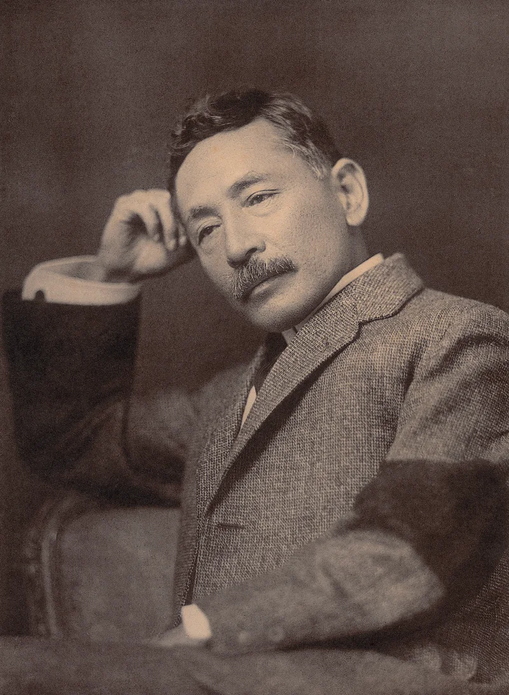
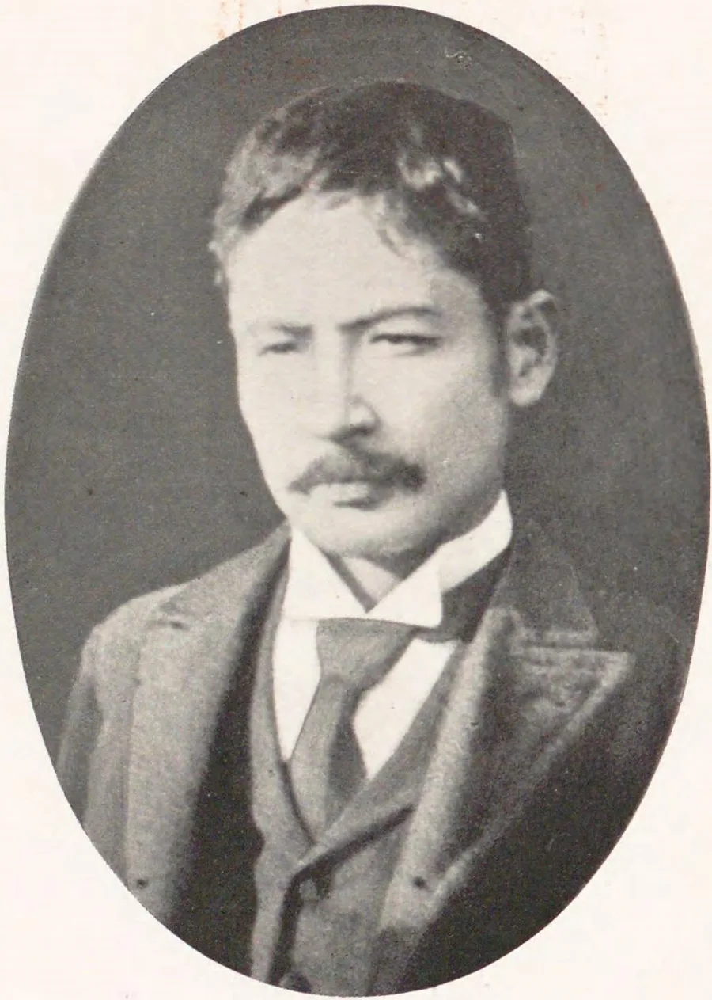
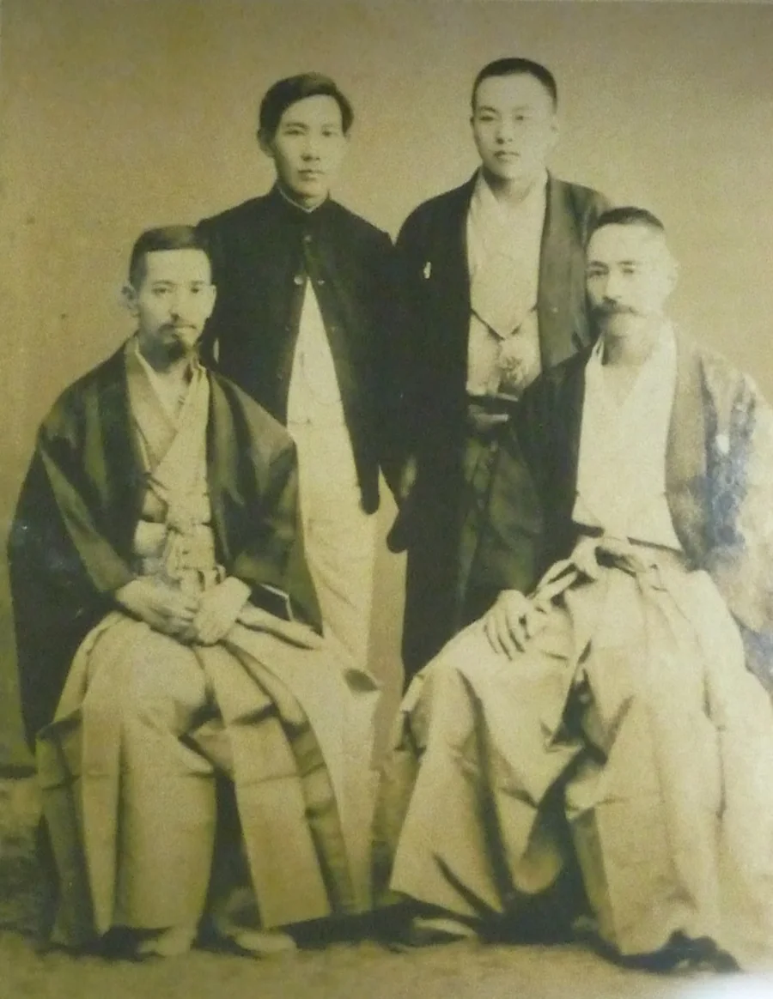
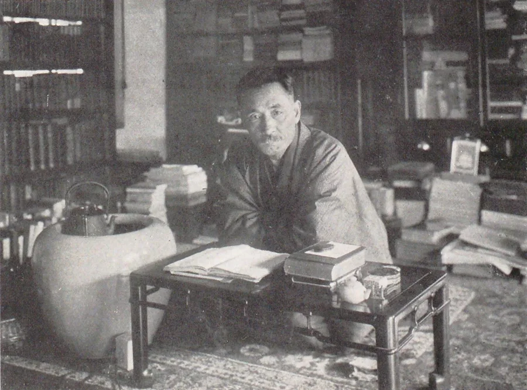

Language & Literature · Modernity & Moral Reflection
Natsume Sōseki
“The moon is beautiful tonight.” How an English professor turned novelist diagnosed the modern ego, the fragility of language, and the solitude of the human heart.
At the turn of the twentieth century, Japan raced headlong from feudal isolation into industrial modernity. No writer understood the human cost of that transformation more deeply than Natsume Sōseki (夏目 漱石, 1867–1916). Scholar, satirist, moral philosopher, and master novelist, Sōseki gave modern Japan its literary voice—revealing how individual freedom can curdle into unbearable loneliness unless anchored by ethical courage.
Meiji Era (1867–1916)The Classroom AnecdoteTheory of Literature (Bungakuron)Sokuten Kyoshi (則天去私)Masterpiece: Kokoro (こころ)

Natsume Sōseki (1867–1916)
Photographed in 1912 by pioneer Tokyo photographer Ogawa Kazumasa. Sōseki stood at the fulcrum of modern Japan—bridging classical Chinese learning, English scholarship, and psychological fiction. For twenty years (1984–2004), his portrait appeared on the Japanese 1,000-yen banknote.
Photo by Ogawa Kazumasa, 1912. Public domain, via National Diet Library.
Before You Begin
What You Will Learn
Explain how tone, understatement and cultural context change a translation (and tell a documented fact from a legend).
Describe how Sōseki used satire and point of view to show human pride (I Am a Cat, Botchan).
Trace his question: what happens to a person, and a nation, that gains freedom without moral character?
Compare Sōseki’s answer with a Christian view of self-denial and humility, charitably and honestly.
For teachers: Sōseki was a secular Meiji writer; his novels are about human nature, not Christian faith. Grades 7–9 should use the Cat, Botchan, moon-translation and vocabulary sections. Kokoro contains suicide and is kept to Grades 10–12 with the teacher note in its tab. Light and Dark and Sanshirō have adult relationships; use summaries only. Preview before assigning full texts.
Cultural Semantics & Translation Craft
The Anecdote: “The Moon is Beautiful Tonight”
Why the father of modern Japanese fiction told his English students to leave “love” unsaid.
A famous story, not a documented fact. Japanese tradition says that while Sōseki taught English (at Matsuyama Middle School, then the Fifth Higher School in Kumamoto), he asked students to translate English dialogue into Japanese. In the story, one student translated the dramatic Western line “I love you” literally as 我君を愛す (Ware kimi o aisu) or 愛しています (Aishiteimasu).
The story says Sōseki shook his head: “Japanese people do not speak like that.” In the Meiji era, blurted declarations of romantic devotion felt foreign, mechanical, and intrusive. Sōseki offered an alternative:
Interactive Translation & Resonance Lab
Select a translation mode below to see how linguistic structure, cultural context, and emotional resonance change the meaning of connection.
月が綺麗ですね
Tsuki ga kirei desu ne · “The moon is beautiful tonight, isn't it?”
Directness / Declarative Force20%
Poetic Resonance & Yojō (余情)98%
The two meters are a teaching illustration, not a measurement. Argue with the numbers!
The Teaching Point: Walking together beneath the evening sky, pointing out the moon invites shared presence without ego. It implies: “Because you are here beside me, this evening's quiet beauty is complete.” It honors yojō (lingering emotional resonance) and sasshi (intuitive empathy), leaving space for the other person rather than demanding an immediate romantic transaction.
Fact check: No letter, diary or student memoir from Sōseki's own lifetime records this exchange. It is a popular legend that grew up long after his death, so treat it as a story that teaches something true about translation, not as a biography entry. The folklore continues: readers paired it with another Meiji translation tale. When novelist Futabatei Shimei translated a line of Ivan Turgenev's Russian in the late 1880s, he is said to have found a literal “I am yours” too bold, and wrote 「死んでもいいわ」 (Shindemo ii wa — “I could die right now without regrets”). Popular tradition says the gentle reply to “The moon is beautiful tonight” is that line. It is an idiom for deep contentment (like English “I'm on top of the world”), not a literal wish.
Biographical Foundations
A Life Between Two Worlds
From an unwanted child in feudal Edo to a lonely scholar in Victorian London, Sōseki’s life mirrors the identity crisis of modern Japan.
1867 – 1893
Childhood & The Classical Mind
Born Kinnosuke Natsume in Edo about a year before the Meiji Restoration swept away the shogunate. Born to an aging official family that didn't expect him, he was given away to a servant family, adopted, and later reclaimed amidst bitter family disputes. Feeling like an outsider in his own home, he sought refuge in Chinese classical poetry (kanbun), before discovering English literature at Tokyo Imperial University.
1895 – 1900
Matsuyama & Kumamoto
After graduating, Sōseki took teaching posts far from Tokyo—first in the provincial castle town of Matsuyama in Shikoku, then Kumamoto in Kyushu. His encounters with rural traditions, local superstitions, and boisterous students supplied the comedy and sharp ethical conflicts that would soon erupt into his wildly popular novel Botchan.
1900 – 1903
The London Exile & Breakdown
The Ministry of Education sent Sōseki on a meager scholarship to London to master English literature. Isolated, poor, and experiencing racial discrimination in Victorian boarding houses, he suffered severe depression. He wrote: “I lived among English gentlemen like a shaggy dog among wolves.” Yet this crisis spurred him to ask what literature truly is, resulting in his rigorous Bungakuron (Theory of Literature).
1903 – 1910
Professor to Full-Time Novelist
Returning to Japan, he succeeded Lafcadio Hearn as the elite lecturer in English literature at Tokyo Imperial University. In 1905, his serialized satire I Am a Cat made him an instant celebrity. In 1907, at age 40, he made the audacious choice to resign his university chair and become a full-time staff novelist for the Asahi Shimbun newspaper.
1910 – 1916
The Shuzenji Crisis & Kokoro
In August 1910, while recuperating from chronic ulcers at the Shuzenji hot spring, Sōseki suffered a catastrophic gastric hemorrhage, losing consciousness for thirty minutes. This brush with death deepened his psychological and moral focus. Over his remaining years he wrote his darkest and most profound masterpieces: Sanshirō, Sorekara, Mon, and Kokoro.
Photographic Records & Milestones

Matsuyama Middle School (1896)
Young Sōseki (seated center in western three-piece suit) with colleagues and students in Shikoku. His vivid year in Matsuyama formed the backdrop for Botchan and the classroom translation exchange.
Matsuyama Middle School Archives, 1896. Public domain.

Farewell Gathering Before London (1900)
Colleagues bid farewell to Sōseki prior to his two-year voyage to Victorian London. The resulting cultural estrangement led directly to his critical breakthrough: refusing to mimic Western literature blindly.
Historical archive photograph, 1900. Public domain.

The Study at Sōseki Sanbō (1914)
Sōseki in his Tokyo home study in Waseda-Minamichō during the year he composed Kokoro. Here he hosted weekly gatherings for young writers, including Akutagawa Ryūnosuke, and developed his concept of Sokuten Kyoshi.
Archival study portrait, 1914. Public domain.
Core Philosophy & Moral Thought
Sōseki’s Teachings: The Peril of the Modern Ego
Why personal freedom without moral responsibility produces incurable loneliness.
Sōseki was not simply a novelist; he was a moral philosopher examining the spiritual dilemma of modern humans. As Japan modernized with staggering speed, copying Western legal, industrial, and military models, Sōseki diagnosed an unsettling truth: modernization was being imposed from the outside (gaihatsuteki), rather than blossoming organically from within (naihatsuteki). People had traded communal feudal traditions for Western individual freedom, but without developing the internal spiritual maturity to handle it.
Pre-Modern Trap
Feudal Conformity
The Trap: Submerging the individual self under rigid social hierarchies, family obligations (giri), and blind obedience to authority. Personal desires and authentic expression are suffocated.
Modern Disease
Unbridled Egoism
The Danger: Self-assertion without ethical duty, a danger Sōseki saw in both Japan and the West. Individuals use wealth, status, or cunning to dominate others. The inevitable outcome is guilt, rivalry, and spiritual isolation (koritsu).
Sōseki's Ideal
Sokuten Kyoshi (則天去私)
“Follow Heaven, Forsake the Self”: Realizing that true maturity does not mean gratifying the petty ego (shi). One must align the heart with the universal, impartial moral order of nature/heaven (Ten) while fiercely respecting the individuality of others.
“Born into an era filled with freedom, independence, and the ego, we must all taste this loneliness as the sacrifice we pay for them.” — Kokoro (1914), Part I, “Sensei and I”
Worldview Connection: Self-Denial, Humility and Their Source
Sōseki saw clearly that the proud, grasping self ends in loneliness. Scripture agrees about the diagnosis: “Do nothing from selfish ambition or conceit, but in humility count others more significant than yourselves” (Philippians 2:3, ESV), and “If anyone would come after me, let him deny himself and take up his cross and follow me” (Luke 9:23, ESV). But the cure differs. Sokuten Kyoshi points to an impersonal “Heaven” or natural order and to self-effort. The Christian answer is a personal God who forgives and gives a new heart (Psalm 51:10; Ezekiel 36:26), which is what Sensei, in Kokoro, never finds. Discuss: where does Sōseki’s diagnosis ring true, and where does it fall short of the hope the gospel offers?
In his celebrated 1914 lecture to students at the Gakushūin school, My Individualism (私の個人主義, Watakushi no kojinshugi), Sōseki laid out three principles (summarized here) for the modern individual:
Cultivate your own individuality: Discover your true abilities and authentic voice rather than blindly following peer pressure or state mandates.
Respect the individuality of others: Your freedom ends where another person’s dignity begins; their right to live freely is identical to your own.
Practice moral restraint: Never use the power of money or social status to force others against their will. Individual power must always be accompanied by a keen sense of personal duty.
Literary Canon & Close Reading
The Major Works: An Annotated Compendium
Explore Sōseki’s most enduring novels through original Japanese excerpts, narrative structure, and central moral inquiries.
I Am a Cat (吾輩は猫である · Wagahai wa Neko de Aru)
Serialized 1905–1906 · Comic Satire & Social Critique
「吾輩は猫である。名前はまだ無い。どこで生れたかとんと見当がつかぬ。」
“I am a cat. As yet I have no name. I haven't the fuzziest idea where I was born.”
Narrative Architecture
Told from the perspective of an unnamed stray cat residing in the household of Sneaze (Kushami), an irritable, self-absorbed middle-school teacher modeled on Sōseki himself. The cat observes human vanity, pseudointellectual posturing, and Western fads with detached, aristocratic amusement (using the haughty pronoun wagahai).
The Critical Inquiry
Why do humans take themselves so seriously? By defamiliarizing human civilization through feline eyes, Sōseki skewers the affectations of Meiji intellectuals who memorized Western catchphrases without possessing genuine wisdom or compassion.
Botchan (坊っちゃん)
Published 1906 · Picaresque & Moral Comedy
「親譲りの無鉄砲で小供の時から損ばかりしている。」
“Thanks to the reckless rashness I inherited from my parents, I’ve done nothing but suffer losses ever since I was a kid.”
Narrative Architecture
A fast-paced, high-spirited tale of a brash, honest young mathematics teacher from Tokyo dispatched to a rural middle school in Shikoku. Botchan assigns biting nicknames to his hypocritical colleagues: “Red Shirt” (the scheming vice-principal), “Clown” (the fawning sycophant), and “Porcupine” (the gruff but upright colleague).
The Critical Inquiry
Can straightforward honesty survive against entrenched bureaucratic compromise and two-faced politeness? Botchan refuses to bend to polite hypocrisy, asserting that a moral loss is preferable to a corrupt victory.
Kusamakura (草枕 · The Three-Cornered World)
Published 1906 · Philosophical & Aesthetic Meditation
“Going up a mountain path, I fell to thinking. Approach everything rationally, and you become harsh. Pole along in the stream of emotions, and you will be swept away. Give rein to your desires, and you will become cramped. By and large the world of men is not an easy place to live.”
Narrative Architecture
A Tokyo painter retreats into the mountains to escape the clamor of modern society, seeking a purely aesthetic, detached consciousness (hininjō — unburdened by human passions). At an isolated hot spring inn, he becomes fascinated by an enigmatic, fiercely independent young woman named Nami.
The Critical Inquiry
Is aesthetic detachment a refuge or an illusion? The novel concludes at a train station as a young conscript departs for the Russo-Japanese War; the brutal reality of historical sacrifice dissolves the artist's fragile dream of pure detachment.
Sanshirō (三四郎)
Serialized 1908 · Coming of Age & Psychological Realism
「迷羊、ストレイ・シープ。……分かって？」
“‘Stray sheep, stray sheep... Do you understand?’” — Mineko to Sanshirō beside the university pond
Narrative Architecture
Sanshirō Ogawa arrives in bustling, electric Tokyo from rural Kyushu to attend the Imperial University. He finds himself caught between three distinct worlds: the tranquil, old-fashioned agrarian world of his mother, the detached scholarly realm of his professor, and the dazzling, cosmopolitan world of independent modern women symbolized by Mineko.
The Critical Inquiry
How does a naive mind find its orientation in a fast-spinning, disorienting metropolis? The motif of the “stray sheep” captures the wandering youth of modern Japan, unmoored from traditional certainty.
Kokoro (こころ · The Heart / The Heart of Things)
Published 1914 · Grades 10–12 only · mature themes (see teacher note)
「私はその人を常に先生と呼んでいた。」
“I always called him ‘Sensei.’” (the novel’s opening line; translation simplified)
Narrative Architecture
Constructed in three movements: Sensei and I (the young narrator meets an aloof, melancholic intellectual in Kamakura), My Parents and I (the narrator returns home to care for his dying father), and Sensei’s Testament (a prolonged confession letter unveiling the secret betrayal and guilt that destroyed Sensei’s youth).
The Critical Inquiry
Sensei deceives his closest friend, K, to win the woman they both love, and K dies tragically. Sensei carries the guilt for the rest of his life, and it hollows out his marriage. The novel ties his private sorrow to the end of the Meiji era in 1912. Teacher note: the book includes two deaths by suicide, handled in the text without method or glamor. Grades 10–12 only. Read these scenes with care, and keep the class focus on guilt, secrecy, honesty and the need for confession, forgiveness and help. Remind students that no sorrow has to be carried alone; a trusted adult is always the right next step.
Light and Dark (明暗 · Meian)
Unfinished at his death in 1916 · Modern Psychological Epic
Theme in his own words (a paraphrase, not a quotation): the stubborn self, insisting on its own way, poisons even the closest relationships.
Narrative Architecture
Sōseki’s longest and most ambitious novel, left unfinished at 188 chapters upon his death. The narrative dissects the modern marriage of Tsuda and O-Nobu with surgical psychological precision, showing how vanity, petty calculation, and stubborn self-regard poison intimacy.
The Critical Inquiry
Can two modern individuals ever be genuinely honest with one another, or are human interactions doomed to be subtle wars of ego? In Light and Dark, Sōseki prepared to resolve this psychological knot through his ultimate philosophy of Sokuten Kyoshi.
Cultural Literacy & Critical Terms
Japanese Literary Concepts in Sōseki’s World
Essential philosophical and literary vocabulary for understanding Sōseki’s fiction.
Kokoro 心
koh-koh-roh
Heart, mind, spirit, intention, and emotional core. In Japanese, kokoro synthesizes intellect and emotion into one unified inner life, rather than dividing brain and heart.
Sokuten Kyoshi 則天去私
soh-koo-ten kyoh-shee
“Follow Heaven, Forsake Self.” Sōseki's mature moral doctrine: overcoming small, selfish egoism to align one's life with universal truth, natural harmony, and ethical duty.
Yojō 余情
yoh-joh
Lingering emotional resonance or poetic overtones. The aesthetic conviction that what is left unsaid carries greater power and beauty than explicit verbalization.
Bungakuron 文学論
boon-gah-koo-rohn
“Theory of Literature” (1907). Sōseki's cognitive and psychological formula (F + f), arguing that literary art requires the synthesis of intellectual form (F) with emotional feeling (f).
Gaihatsuteki 外発的
gigh-haht-soo-teh-kee
“Externally induced.” Sōseki's critique of Meiji modernization: Western systems were adopted mechanically from the outside under pressure, leaving citizens spiritually adrift.
Junshi 殉死
joon-shee
An old samurai custom of a retainer following his lord in death, long outlawed. General Nogi's 1912 act on the day of Emperor Meiji's funeral shocked Japan and is referred to in Kokoro as a sign that an age had ended. (Historical vocabulary only; do not dwell on it with younger students.)
Seminar Discussions & Writing Inquiries
Classroom Socratic Inquiries
Questions for whole-class seminar, small-group debate, and analytical essays.
Track A · Story Craft & Cultural Translation (Grades 7–9)
The Power of the Outside Eye: In I Am a Cat, how does giving an unnamed cat human speech and snobbish opinions reveal the silliness of human arguments? Choose an everyday human habit (checking smartphones, lining up for lunch) and describe it from a pet's point of view.
Translating Feelings: Why did Sōseki reject direct phrases like “I love you” in favor of “The moon is beautiful tonight”? How does understatement change the balance of power between two people who care for each other?
The Rebel with Principles: In Botchan, the main character is hot-tempered and constantly makes mistakes, yet readers cheer for him. What makes an honest, flawed person more likable than a smooth-talking hypocrite?
Track B · Moral Philosophy & Modern Alienation (Grades 10–12)
The Cost of Freedom: Sōseki wrote that modern humans are given freedom, independence, and the ego, but must taste deep loneliness as the price. Does modern digital society confirm or challenge Sōseki’s warning?
The Betrayal of K: In Kokoro, Sensei wins over his friend K by using K’s own words against him and then hides what he did. How does Sōseki show the damage that secrets, jealousy and deceit do to a friendship and to a conscience? What would honest confession have looked like?
Humility Compared: Read Philippians 2:3–8 beside Sokuten Kyoshi. What do they share? What does Scripture add that Sōseki’s “Heaven” does not?
Sokuten Kyoshi in the 21st Century: How does Sōseki’s command to “Follow Heaven, Forsake the Self” differ from giving up one’s individuality? Can a person maintain strong individual convictions while relinquishing arrogant self-centeredness?